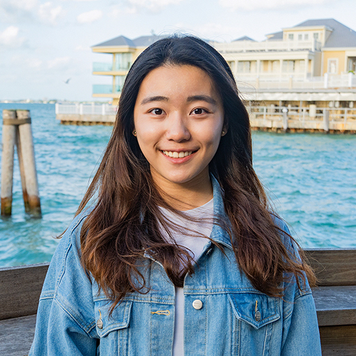

|  |
Huei-Chen Whitney Chiu
I am a second year Master student in Biostatistics at the University of Toronto. I am currently a research assistant at the Hospital of Sick Children (SickKids).
My research interests lie in health economics, pharmaco-epidemiology and related research methods with an emphasis on evaluating health interventions and better understanding the intervention timing through novel algorithms. I am also motivated to inform healthcare policy decisions with evidence generated from real-world data.
I received my BScPharm at Taipei Medical University and am now completing a MPH at University of Toronto.
Click here to download my resume.
E-mail: whitney.chiu at mail.utoronto.ca
|